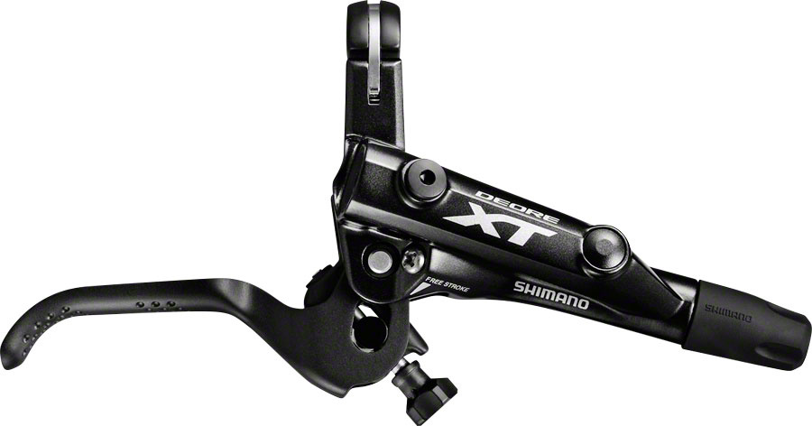

It is a hand-operated lever that pulls on a cable that actuate calipers (there are a few types) that push the brake pads onto the rim (or brake disc rotor) and slow or stop the bicycle. There are usually two of these, with the right lever operating the front brakes and the left lever operating the rear brakes.